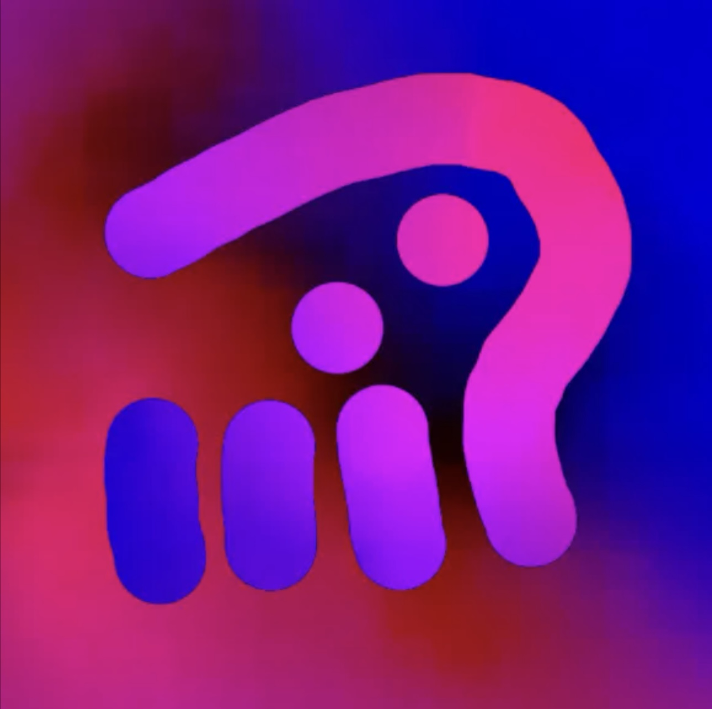

Specialty
✦ Toki Pona development
Welcome to my little corner of the web

Toki Pona Developer
they / them
A developer who enjoys making small things for big ideas, exploring language, and finding elegant ways to say more with less.
✦ Toki Pona development
Toki Pona
English
Spanish
✦ Conlanging